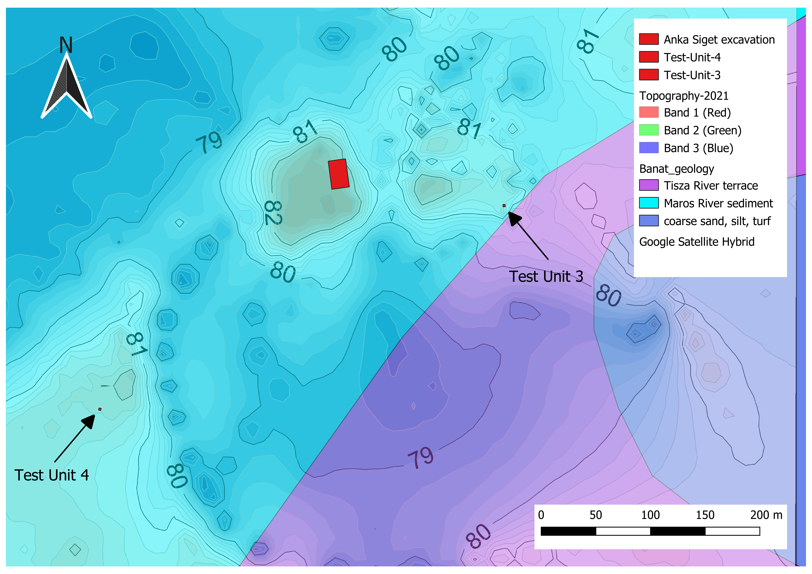

Excavation Locations Compared with Topography and Geology of Rabe Anka Siget Archaeological Site

My map-making journey began in the summer of 2022 during a six-week archaeological field school in Rabe, Serbia. There, I collaborated with a postgraduate student to conduct magnetic susceptibility testing and mapped the results using QGIS.